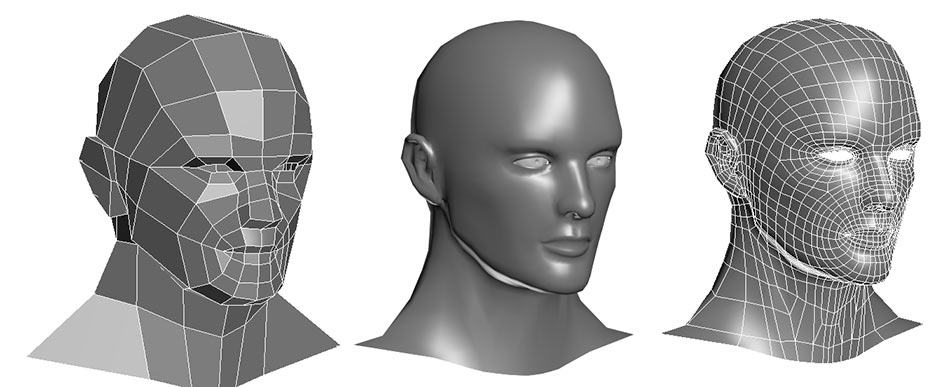
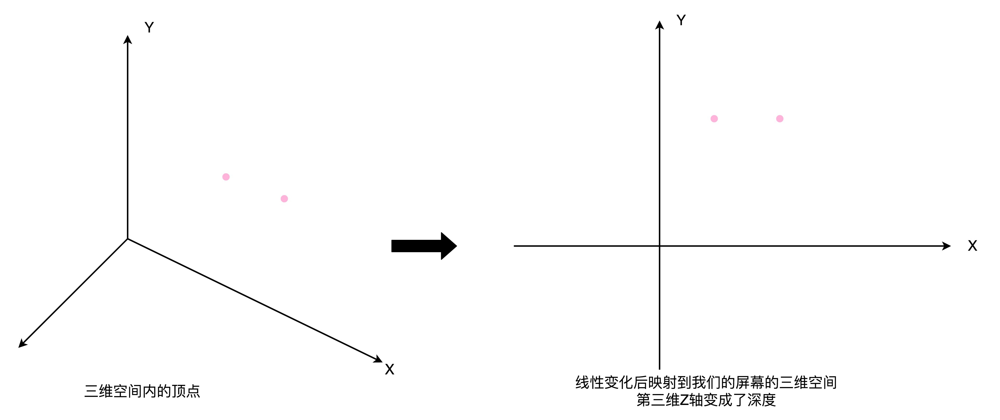
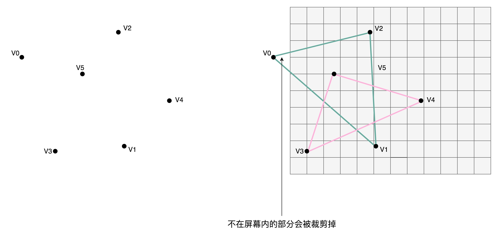
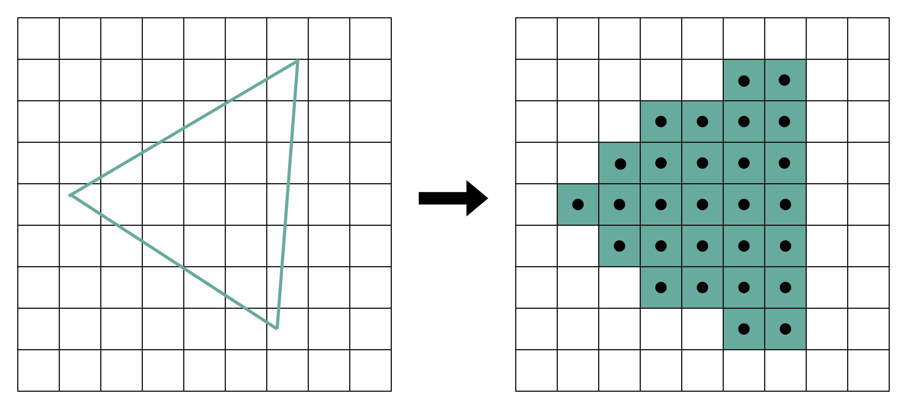
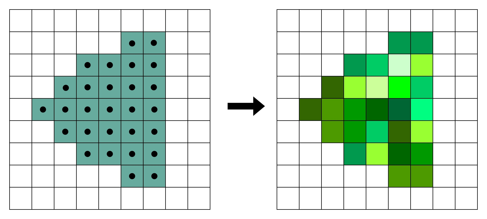
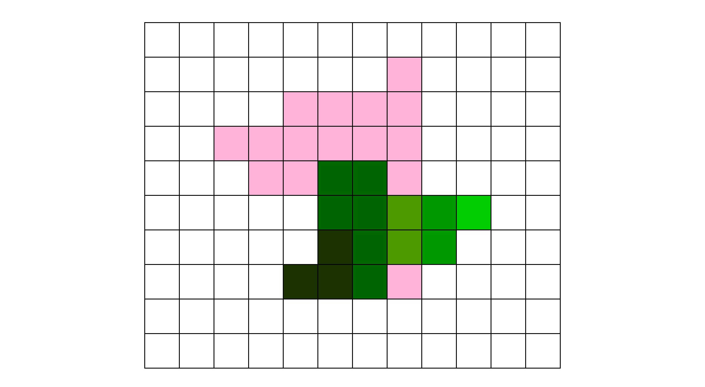
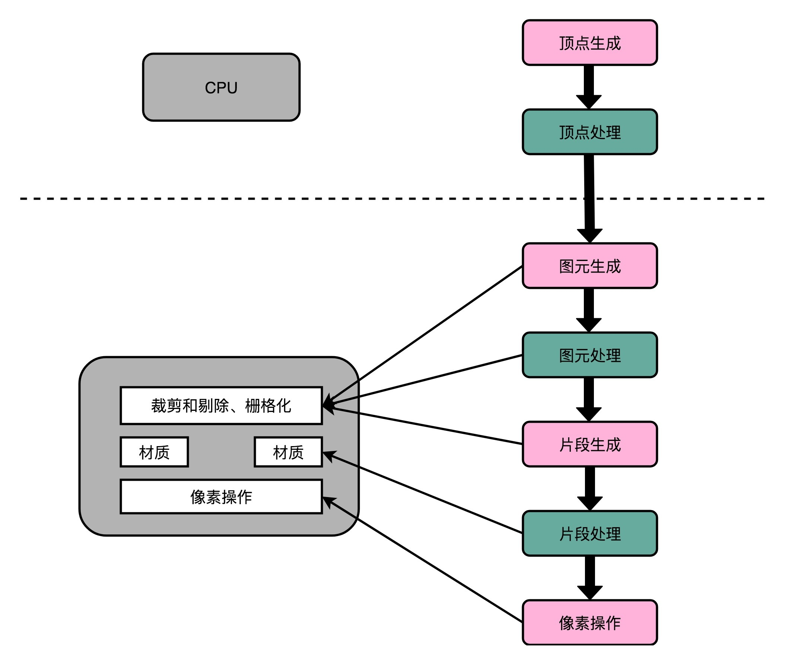

- 00 开篇词 为什么你需要学习计算机组成原理？.md.html
- 01 冯·诺依曼体系结构：计算机组成的金字塔.md.html
- 02 给你一张知识地图，计算机组成原理应该这么学.md.html
- 03 通过你的CPU主频，我们来谈谈“性能”究竟是什么？.md.html
- 04 穿越功耗墙，我们该从哪些方面提升“性能”？.md.html
- 05 计算机指令：让我们试试用纸带编程.md.html
- 06 指令跳转：原来if...else就是goto.md.html
- 07 函数调用：为什么会发生stack overflow？.md.html
- 08 ELF和静态链接：为什么程序无法同时在Linux和Windows下运行？.md.html
- 09 程序装载：“640K内存”真的不够用么？.md.html
- 10 动态链接：程序内部的“共享单车”.md.html
- 11 二进制编码：“手持两把锟斤拷，口中疾呼烫烫烫”？.md.html
- 12 理解电路：从电报机到门电路，我们如何做到“千里传信”？.md.html
- 13 加法器：如何像搭乐高一样搭电路（上）？.md.html
- 14 乘法器：如何像搭乐高一样搭电路（下）？.md.html
- 15 浮点数和定点数（上）：怎么用有限的Bit表示尽可能多的信息？.md.html
- 16 浮点数和定点数（下）：深入理解浮点数到底有什么用？.md.html
- 17 建立数据通路（上）：指令加运算=CPU.md.html
- 18 建立数据通路（中）：指令加运算=CPU.md.html
- 19 建立数据通路（下）：指令加运算=CPU.md.html
- 20 面向流水线的指令设计（上）：一心多用的现代CPU.md.html
- 21 面向流水线的指令设计（下）：奔腾4是怎么失败的？.md.html
- 22 冒险和预测（一）：hazard是“危”也是“机”.md.html
- 23 冒险和预测（二）：流水线里的接力赛.md.html
- 24 冒险和预测（三）：CPU里的“线程池”.md.html
- 25 冒险和预测（四）：今天下雨了，明天还会下雨么？.md.html
- 26 Superscalar和VLIW：如何让CPU的吞吐率超过1？.md.html
- 27 SIMD：如何加速矩阵乘法？.md.html
- 28 异常和中断：程序出错了怎么办？.md.html
- 29 CISC和RISC：为什么手机芯片都是ARM？.md.html
- 30 GPU（上）：为什么玩游戏需要使用GPU？.md.html
- 31 GPU（下）：为什么深度学习需要使用GPU？.md.html
- 32 FPGA、ASIC和TPU（上）：计算机体系结构的黄金时代.md.html
- 33 解读TPU：设计和拆解一块ASIC芯片.md.html
- 34 理解虚拟机：你在云上拿到的计算机是什么样的？.md.html
- 35 存储器层次结构全景：数据存储的大金字塔长什么样？.md.html
- 36 局部性原理：数据库性能跟不上，加个缓存就好了？.md.html
- 37 理解CPU Cache（上）：“4毫秒”究竟值多少钱？.md.html
- 38 高速缓存（下）：你确定你的数据更新了么？.md.html
- 39 MESI协议：如何让多核CPU的高速缓存保持一致？.md.html
- 40 理解内存（上）：虚拟内存和内存保护是什么？.md.html
- 41 理解内存（下）：解析TLB和内存保护.md.html
- 42 总线：计算机内部的高速公路.md.html
- 43 输入输出设备：我们并不是只能用灯泡显示“0”和“1”.md.html
- 44 理解IO_WAIT：IO性能到底是怎么回事儿？.md.html
- 45 机械硬盘：Google早期用过的“黑科技”.md.html
- 46 SSD硬盘（上）：如何完成性能优化的KPI？.md.html
- 47 SSD硬盘（下）：如何完成性能优化的KPI？.md.html
- 48 DMA：为什么Kafka这么快？.md.html
- 49 数据完整性（上）：硬件坏了怎么办？.md.html
- 50 数据完整性（下）：如何还原犯罪现场？.md.html
- 51 分布式计算：如果所有人的大脑都联网会怎样？.md.html
- 52 设计大型DMP系统（上）：MongoDB并不是什么灵丹妙药.md.html
- 53 设计大型DMP系统（下）：SSD拯救了所有的DBA.md.html
- 54 理解Disruptor（上）：带你体会CPU高速缓存的风驰电掣.md.html
- 55 理解Disruptor（下）：不需要换挡和踩刹车的CPU，有多快？.md.html
- 结束语 知也无涯，愿你也享受发现的乐趣.md.html
- 捐赠
30 GPU（上）：为什么玩游戏需要使用GPU？
讲完了 CPU，我带你一起来看一看计算机里的另外一个处理器，也就是被称之为 GPU 的图形处理器。过去几年里，因为深度学习的大发展，GPU 一下子火起来了，似乎 GPU 成了一个专为深度学习而设计的处理器。那 GPU 的架构究竟是怎么回事儿呢？它最早是用来做什么而被设计出来的呢？
想要理解 GPU 的设计，我们就要从 GPU 的老本行图形处理说起。因为图形处理才是 GPU 设计用来做的事情。只有了解了图形处理的流程，我们才能搞明白，为什么 GPU 要设计成现在这样；为什么在深度学习上，GPU 比起 CPU 有那么大的优势。
GPU 的历史进程
GPU 是随着我们开始在计算机里面需要渲染三维图形的出现，而发展起来的设备。图形渲染和设备的先驱，第一个要算是 SGI（Silicon Graphics Inc.）这家公司。SGI 的名字翻译成中文就是“硅谷图形公司”。这家公司从 80 年代起就开发了很多基于 Unix 操作系统的工作站。它的创始人 Jim Clark 是斯坦福的教授，也是图形学的专家。
后来，他也是网景公司（Netscape）的创始人之一。而 Netscape，就是那个曾经和 IE 大战 300 回合的浏览器公司，虽然最终败在微软的 Windows 免费捆绑 IE 的策略下，但是也留下了 Firefox 这个完全由开源基金会管理的浏览器。不过这个都是后话了。
到了 90 年代中期，随着个人电脑的性能越来越好，PC 游戏玩家们开始有了“3D 显卡”的需求。那个时代之前的 3D 游戏，其实都是伪 3D。比如，大神卡马克开发的著名Wolfenstein 3D（德军总部 3D），从不同视角看到的是 8 幅不同的贴图，实际上并不是通过图形学绘制渲染出来的多边形。
这样的情况下，游戏玩家的视角旋转个 10 度，看到的画面并没有变化。但是如果转了 45 度，看到的画面就变成了另外一幅图片。而如果我们能实时渲染基于多边形的 3D 画面的话，那么任何一点点的视角变化，都会实时在画面里面体现出来，就好像你在真实世界里面看到的一样。
而在 90 年代中期，随着硬件和技术的进步，我们终于可以在 PC 上用硬件直接实时渲染多边形了。“真 3D”游戏开始登上历史舞台了。“古墓丽影”“最终幻想 7”，这些游戏都是在那个时代诞生的。当时，很多国内的计算机爱好者梦寐以求的，是一块 Voodoo FX 的显卡。
那为什么 CPU 的性能已经大幅度提升了，但是我们还需要单独的 GPU 呢？想要了解这个问题，我们先来看一看三维图像实际通过计算机渲染出来的流程。
图形渲染的流程
现在我们电脑里面显示出来的 3D 的画面，其实是通过多边形组合出来的。你可以看看下面这张图，你在玩的各种游戏，里面的人物的脸，并不是那个相机或者摄像头拍出来的，而是通过多边形建模（Polygon Modeling）创建出来的。

3D 游戏里的人脸，其实是用多边形建模创建出来的
而实际这些人物在画面里面的移动、动作，乃至根据光线发生的变化，都是通过计算机根据图形学的各种计算，实时渲染出来的。
这个对于图像进行实时渲染的过程，可以被分解成下面这样 5 个步骤：
- 顶点处理（Vertex Processing）
- 图元处理（Primitive Processing）
- 栅格化（Rasterization）
- 片段处理（Fragment Processing）
- 像素操作（Pixel Operations）
我们现在来一步一步看这 5 个步骤。
顶点处理
图形渲染的第一步是顶点处理。构成多边形建模的每一个多边形呢，都有多个顶点（Vertex）。这些顶点都有一个在三维空间里的坐标。但是我们的屏幕是二维的，所以在确定当前视角的时候，我们需要把这些顶点在三维空间里面的位置，转化到屏幕这个二维空间里面。这个转换的操作，就被叫作顶点处理。
如果你稍微学过一点图形学的话，应该知道，这样的转化都是通过线性代数的计算来进行的。可以想见，我们的建模越精细，需要转换的顶点数量就越多，计算量就越大。而且，这里面每一个顶点位置的转换，互相之间没有依赖，是可以并行独立计算的。

顶点处理就是在进行线性变换
图元处理
在顶点处理完成之后呢，我们需要开始进行第二步，也就是图元处理。图元处理，其实就是要把顶点处理完成之后的各个顶点连起来，变成多边形。其实转化后的顶点，仍然是在一个三维空间里，只是第三维的 Z 轴，是正对屏幕的“深度”。所以我们针对这些多边形，需要做一个操作，叫剔除和裁剪（Cull and Clip），也就是把不在屏幕里面，或者一部分不在屏幕里面的内容给去掉，减少接下来流程的工作量。

栅格化
在图元处理完成之后呢，渲染还远远没有完成。我们的屏幕分辨率是有限的。它一般是通过一个个“像素（Pixel）”来显示出内容的。所以，对于做完图元处理的多边形，我们要开始进行第三步操作。这个操作就是把它们转换成屏幕里面的一个个像素点。这个操作呢，就叫作栅格化。这个栅格化操作，有一个特点和上面的顶点处理是一样的，就是每一个图元都可以并行独立地栅格化。

片段处理
在栅格化变成了像素点之后，我们的图还是“黑白”的。我们还需要计算每一个像素的颜色、透明度等信息，给像素点上色。这步操作，就是片段处理。这步操作，同样也可以每个片段并行、独立进行，和上面的顶点处理和栅格化一样。

像素操作
最后一步呢，我们就要把不同的多边形的像素点“混合（Blending）”到一起。可能前面的多边形可能是半透明的，那么前后的颜色就要混合在一起变成一个新的颜色；或者前面的多边形遮挡住了后面的多边形，那么我们只要显示前面多边形的颜色就好了。最终，输出到显示设备。

经过这完整的 5 个步骤之后，我们就完成了从三维空间里的数据的渲染，变成屏幕上你可以看到的 3D 动画了。这样 5 个步骤的渲染流程呢，一般也被称之为图形流水线（Graphic Pipeline）。这个名字和我们讲解 CPU 里面的流水线非常相似，都叫Pipeline。

解放图形渲染的 GPU
我们可以想一想，如果用 CPU 来进行这个渲染过程，需要花上多少资源呢？我们可以通过一些数据来做个粗略的估算。
在上世纪 90 年代的时候，屏幕的分辨率还没有现在那么高。一般的 CRT 显示器也就是 640×480 的分辨率。这意味着屏幕上有 30 万个像素需要渲染。为了让我们的眼睛看到画面不晕眩，我们希望画面能有 60 帧。于是，每秒我们就要重新渲染 60 次这个画面。也就是说，每秒我们需要完成 1800 万次单个像素的渲染。从栅格化开始，每个像素有 3 个流水线步骤，即使每次步骤只有 1 个指令，那我们也需要 5400 万条指令，也就是 54M 条指令。
90 年代的 CPU 的性能是多少呢？93 年出货的第一代 Pentium 处理器，主频是 60MHz，后续逐步推出了 66MHz、75MHz、100MHz 的处理器。以这个性能来看，用 CPU 来渲染 3D 图形，基本上就要把 CPU 的性能用完了。因为实际的每一个渲染步骤可能不止一个指令，我们的 CPU 可能根本就跑不动这样的三维图形渲染。
也就是在这个时候，Voodoo FX 这样的图形加速卡登上了历史舞台。既然图形渲染的流程是固定的，那我们直接用硬件来处理这部分过程，不用 CPU 来计算是不是就好了？很显然，这样的硬件会比制造有同样计算性能的 CPU 要便宜得多。因为整个计算流程是完全固定的，不需要流水线停顿、乱序执行等等的各类导致 CPU 计算变得复杂的问题。我们也不需要有什么可编程能力，只要让硬件按照写好的逻辑进行运算就好了。
那个时候，整个顶点处理的过程还是都由 CPU 进行的，不过后续所有到图元和像素级别的处理都是通过 Voodoo FX 或者 TNT 这样的显卡去处理的。也就是从这个时代开始，我们能玩上“真 3D”的游戏了。

不过，无论是 Voodoo FX 还是 NVidia TNT。整个显卡的架构还不同于我们现代的显卡，也没有现代显卡去进行各种加速深度学习的能力。这个能力，要到 NVidia 提出 Unified Shader Archicture 才开始具备。这也是我们下一讲要讲的内容。
总结延伸
这一讲里，我带你了解了一个基于多边形建模的三维图形的渲染过程。这个渲染过程需要经过顶点处理、图元处理、栅格化、片段处理以及像素操作这 5 个步骤。这 5 个步骤把存储在内存里面的多边形数据变成了渲染在屏幕上的画面。因为里面的很多步骤，都需要渲染整个画面里面的每一个像素，所以其实计算量是很大的。我们的 CPU 这个时候，就有点跑不动了。
于是，像 3dfx 和 NVidia 这样的厂商就推出了 3D 加速卡，用硬件来完成图元处理开始的渲染流程。这些加速卡和现代的显卡还不太一样，它们是用固定的处理流程来完成整个 3D 图形渲染的过程。不过，因为不用像 CPU 那样考虑计算和处理能力的通用性。我们就可以用比起 CPU 芯片更低的成本，更好地完成 3D 图形的渲染工作。而 3D 游戏的时代也是从这个时候开始的。
推荐阅读
想要了解 GPU 的设计构造，一个有效的办法就是回头去看看 GPU 的历史。我建议你好好读一读 Wikipedia 里面，关于 GPU 的条目。另外，也可以看看 Techspot 上的The History of the Mordern Graphics Processor的系列文章。
© 2019 - 2023 Liangliang Lee. Powered by gin and hexo-theme-book.